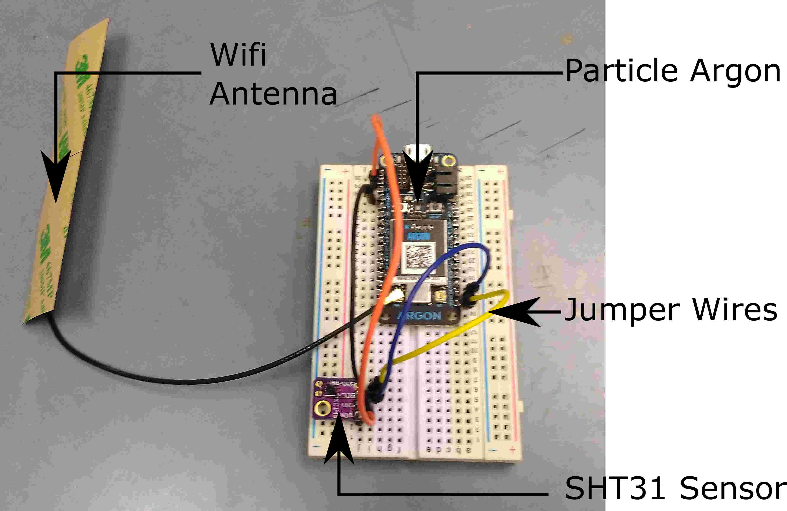
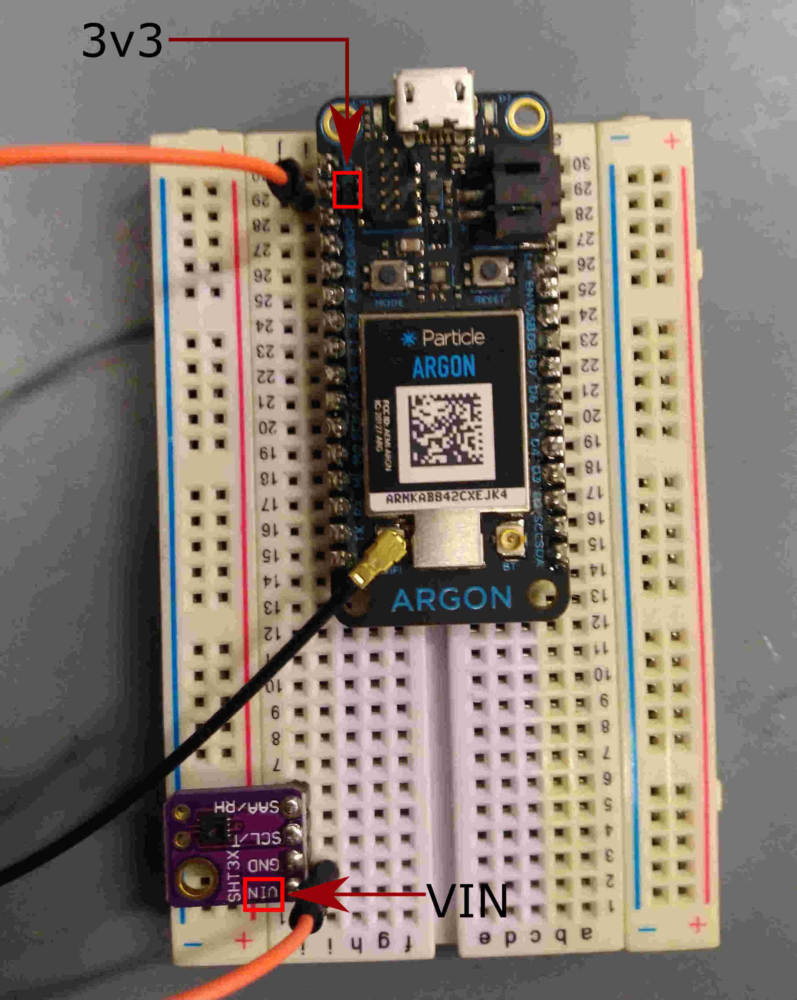
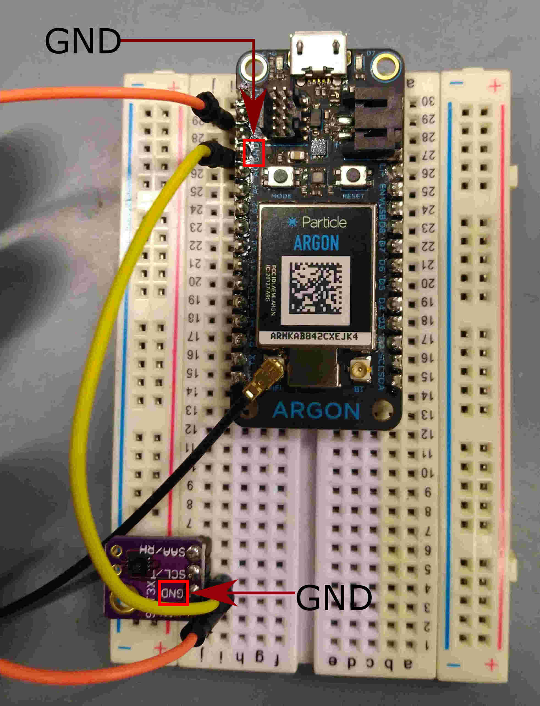
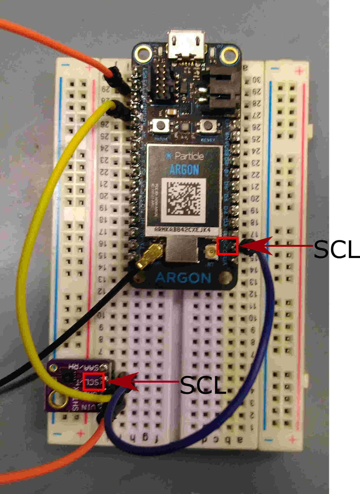
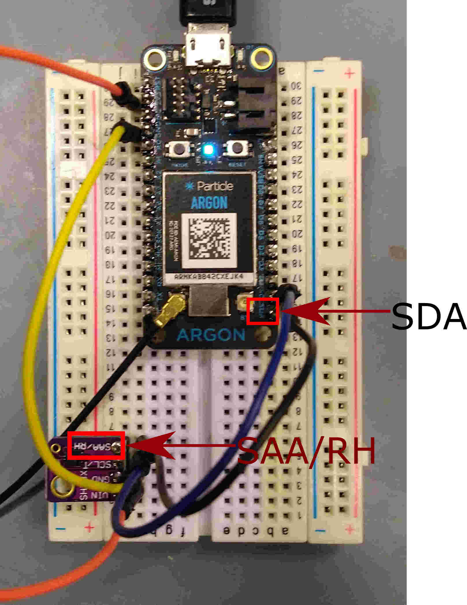
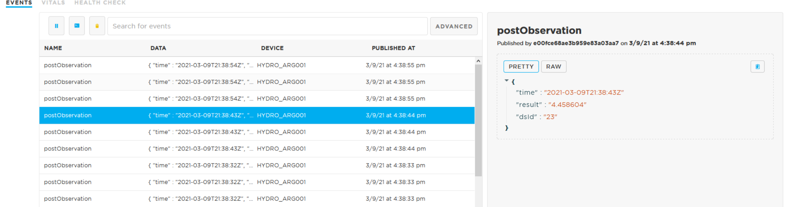

1. SHT31 Air Temperature & Humidity Sensor with Particle Argon¶
This the sensor we are going to build in this exercise.
{kind=link}

Fig. 1.1 Completed SHT31 Sensor¶
We will need the following hardwares:
A Particle Argon (Can be bought here)
USB Data Cable (Should come with your Particle Argon)
A SHT31 Sensor (Can be bought here)
Jumper Wires x 4 (Can be bought here)
Breadboard (Can be bought here)
Soldering Kit (Can be bought here)
Laptop and Smart phone
Connect the Antenna to the Argon as shown in the previous figure.
Solder the header to your SHT31. Follow the instructions here.
Wire up the Argon and the sensor as follows:
a. Connect the Argon and SHT31 onto the breadboard as shown in the previous figure. Connect the 3x3 pin of the Argon to the VIN pin of the SHT31 sensor.
Fig. 1.2 3x3 to VIN pin.¶
b. Connect the Ground (GND) pin of Argon to the SHT31 sensor.

Fig. 1.3 GND to GND pin.¶
c. Connect the Argon SCL pin to the SCL pin of the SHT31 sensor.

Fig. 1.4 SCL to SCL pin.¶
d. Connect the Argon SDA pin to the SAA/RH pin of the SHT31 sensor.

Fig. 1.5 SDA to SAA/RH pin.¶
Refer to Register Particle Device to register the Argon Device with Particle account.
Flash the script ‘STAPI_1_SHT31’ to the Argon. Fill in the mandatory parameters accordingly. You can choose to leave the optional parameters to their default values.
=============================================================================================================== !!! MANDATORY PARAMETERS ================================================================================================================ String thingDesc = "sht31 temp and humidity sensor"; //DESCRIBE THE DEPLOYMENT int sample_rate = 10 * 1000; // how often you want device to publish where the number in front of a thousand is the seconds you want =================================================================================================================== OPTIONAL PARAMETERS (if the device is already registered, these options are ignored) =================================================================================================================== //Description of the location String foiName = "na"; //THE LOCATION NAME String foiDesc = "na";//Define the geometry of the location. Refer to https://tools.ietf.org/html/rfc7946 for geometry types. String locType = "Point"; String enType = "application/vnd.geo+json"; //Define the location of the thing. If location is not impt, use [0,0,0] the null island position. float coordx = 0.0; //lon/x float coordy = 0.0; //lat/y float coordz = 0.0; //elv/z
Go to the device events page. You will see the device is posting data every 10s.

Fig. 1.6 Post data to the database with 10 seconds interval on the event page.¶
{kind=link}
{kind=link}
{kind=link}
{kind=link}
{kind=link}